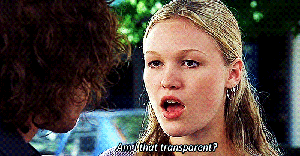

.png)


.gif)
Are You Really A Sream Fan ? Check Out This Quiz !

You Can Only Save one '90s Movie Per Year , So Choose Wisley ...
If You Haven't Seen At Least 12/24 Of These Straight-To-Vhs/DVD Movies Your Not A Zillenial
.gif)
Are You Really A Sream Fan ? Check Out This Quiz !
You Can Only Save one '90s Movie Per Year , So Choose Wisley ...
If You Haven't Seen At Least 12/24 Of These Straight-To-Vhs/DVD Movies Your Not A Zillenial
 timeless gems that continue to enchant audiences.
timeless gems that continue to enchant audiences.
This era marked a cinematic renaissance, with
groundbreaking innovations in storytelling and technology, delivering iconic classics that remain unforgettable.
hold a timeless charm, often considered the golden age of classic cinema. Their iconic status continues to captivate audiences, making them the epitome of cinematic greatness."
a testament to the exceptional talents
of actors like Keanu Reeves, Tom Hanks, and Julia
Roberts, who played pivotal roles in shaping the
decade's cinematic landscape. Their remarkable performances contributed to the enduring legacy
of 90s cinema."
a mosaic of creative genres and visionary
direction, defining an era of cinematic
innovation. Directors like Tarantino and
Spielberg reshaped storytelling, leaving
a lasting cultural imprint. Their enduring
appeal continues to captivate audiences."


WHY ACTION MOVIES WERE BETTER IN THE 90s ?

The 90s were a glorious time for action movie fans. The decade gave us a perfect
storm of machismo, mayhem, and melodrama that simply hasn’t been matched since.
Where else (besides the 80s) could you see A-listers like Arnold Schwarzenegger and Sylvester Stallone cracking skulls while spewing enough corny one-liners to fill a decade’s worth of blockbusters? Or watch as stars like Bruce Willis and Mel Gibson dispatched
villains through sheer guts and grit without today’s dependence on CGI razzle-dazzle?.
The 90s were the last era when R-rated action films could still go head-to-head at the box
office with their PG-13 counterparts. Movies like Terminator 2, Face/Off, and True Lies
pushed the boundaries of violence and language further than most studios would allow today.
Yet at the same time, the 90s also marked the peak of the classic PG-13 action movie – films
like the first Mission Impossible, The Fugitive, and Independence Day that delivered all the
adrenaline audiences craved while largely staying family-friendly.In many ways, 90s action films
were the perfect encapsulation of the Gen X mentality – cynical, street-wise, and always ready
for a fight. And their stars represented the kind of rough-and-tumble masculinity associated
with the decade
From talking dragons to dancing candles, the 1990s are revered as the decade with
some of the best Disney movies ever made. Nothing quite compares to the charm and
ambiance of Walt Disney Productions back in the day. A golden era for Disney films and entertainment, this pilot period spun a spectacular web of classic movies that audiences
have been stuck in ever since, changing the course of cinema with its many spin-offs,
sequels, and innovations. From talking dragons and dancing candles to magic genies and
scheming witches, the '90s are revered as some of the best Disney movies ever made.
Audiences across the world fell in love with some of Disney's most recognizable and
beloved characters, with familiar faces like Buzz Lightyear, Mushu, Lumiere, and conspiring
twins Annie and Hallie making their debuts during the nostalgic decade. Fondly known as the
Disney Renaissance , the '90s was a time of a popular resurgence for the animation studio after
a couple of less beloved decades. Here are the best films released.
What Made The 90s Cinema So Special ? :
The 1990s were a significant and memorable decade for film for several reasons, making the films of that era special in their own right. Here are some factors that contributed to the uniqueness of 1990s films:
1.Diverse Genres:
The 1990s saw a wide range of film genres being explored, from action-packed blockbusters to thought
-provoking dramas, romantic comedies, and animated classics. This diversitys allowed for a broad appeal
to various audiences.
2.Emerging Talent:
Many successful and influential filmmakers and actors emerged during the 1990s.
Directors like Quentin Tarantino, the Coen Brothers, and Steven Spielberg continued to make their
mark on the industry. Actors like Tom Hanks, Julia Roberts, and Brad Pitt gained immense popularity
during this era.
3.Soundtracks :
The 1990s produced some memorable film soundtracks. Films like "Pulp Fiction" (1994)
and "Trainspotting" (1996) featured soundtracks that became iconic in their own right.
News
16 Things That Made The 90s So Special.
Nostalgia Lane

'90s Food Commercials We Still Think
About To This Day
.gif)
News
16 Things That Made The 90s So Special. Nostalgia Lane
'90s Food Commercials We Still Think About To This Day
.jpg) Horror
Horror